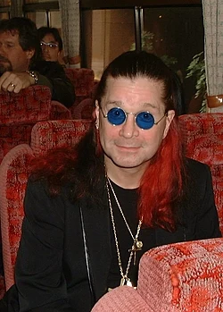

Ozzy Osbourne
John Michael " Ozzy " Osbourne (3 December 1948 – 22 July 2025) was an English singer, songwriter, and media personality who co-founded the pioneering heavy metal band Black Sabbath in 1968, and rose to prominence in the 1970s as their lead vocalist. He then formed his own band in the early 1980s. During this time, he adopted the title " Prince of Darkness ".[^3] [^4]
Osbourne was vocalist on Black Sabbath's first eight albums. The band pioneered heavy metal music, particularly with Black Sabbath, Paranoid (both 1970) and Master of Reality (1971). Osbourne was fired from Black Sabbath in 1979 due to his problems with alcohol and other drugs. He then founded his own band with Randy Rhoads and Bob Daisley, who recorded the albums Blizzard of Ozz (1980) and Diary of a Madman (1981). Osbourne released thirteen studio albums, the first seven of which were certified multi-platinum in the United States. In the 1980s, Osbourne drew controversy for his antics both onstage and offstage, and was accused of promoting Satanism by the Christian right. He reunited with Black Sabbath on several occasions. He rejoined from 1997 to 2005, and again in 2012; during this second reunion he sang on the band's last studio album, 13 (2013), before they embarked on a farewell tour that ended in 2017. On 5 July 2025, Osbourne performed his final show at the Back to the Beginning concert in Birmingham, having announced that it would be his last due to health issues. Although he intended to continue recording music, he died 17 days later, on 22 July.

Ozzy Osbourne and Amy Winehouse (2007) pic.twitter.com/GTgrc43GGA
— 🎸 Rock History 🎸 (@historyrock_) July 10, 2025
Guy proposing to his girlfriend in front of Ozzy
byu/Shekel_Hadash inMadeMeSmile
‘Yeah, I’m this guy, Ozzy, you plonk. Don’t believe me, ask Lemmy here!’ pic.twitter.com/Dq2wpL6ILg
— Punt Road (@punt_rd) August 6, 2025
Black Sabbath released their third studio album, “Master of Reality” on this day in 1971. Produced by Rodgers Bain, it would be his last collaboration with the band.
— Jim (@JVMonte2) August 6, 2025
What are your thoughts on this album?
Favourite tracks?#BlackSabbath pic.twitter.com/slcLC6WaeM
About DonGato
A digital nomad.